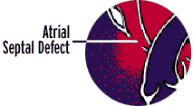
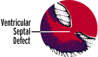

Information on the heart
Below is some interesting information that we learned during our stay at DUMC.
CONGENITAL HEART DISEASECongenital means inborn or existing at birth. The terms congenital heart defect and congenital heart disease are often used equally, but the word “defect” is more accurate. A congenital heart defect occurs when the heart or blood vessels near the heart don’t develop normally before birth. Congenital heart defects are present in about one percent of live births and are the most frequent congenital malformations in newborns. In most cases scientists don’t know why they occur. Sometimes a viral infection causes serious problems. German measles (also called rubella) is an example. If a mother contracts German measles during pregnancy, it can interfere with the development of the baby’s heart or produce other malformations. Other viral diseases also may produce congenital defects. Certain conditions affecting multiple organs, such as Down’s syndrome, can involve the heart, too. A high number of congenital heart defects also result from mothers’ drinking too much alcohol or using drugs such as cocaine during pregnancy.
Normal Heart Most heart defects either 1) obstruct blood flow in the heart or vessels near it or 2) cause blood to flow through the heart in an abnormal pattern. Rarely defects occur in which only one ventricle (single ventricle) is present, or both the pulmonary artery and aorta arise from the same ventricle (double outlet ventricle). A third rare defect occurs when the right or left side of the heart is incompletely formed — hypoplastic heart. Patent ductus arteriosus (P.D.A.)This defect allows blood to mix between the pulmonary artery and the aorta. Before birth there’s an open passageway (the ductus arteriosus) between these two blood vessels. Normally this closes within a few hours of birth. When this doesn’t happen, however, some blood that should flow through the aorta and on to nourish the body returns to the lungs. A ductus that doesn’t close is quite common in premature infants but rather rare in full-term babies. If the ductus arteriosus is large, a child may tire quickly, grow slowly, catch pneumonia easily and breathe rapidly. In some children symptoms may not occur until after the first weeks or months of life. If the ductus arteriosus is small, the child seems well. If surgery is needed, the surgeon can close the ductus arteriosus by tying it, without opening the heart. If there’s no other defect, this restores the circulation to normal. Hypoplastic left heart syndromeIn hypoplastic left heart syndrome, the left side of the heart — including the aorta, aortic valve, left ventricle and mitral valve — is underdeveloped. Blood reaches the aorta through a patent ductus arteriosus (see above). If this ductus closes, as it usually does, the baby will die. The baby often seems normal at birth but will come to medical attention within a few days of birth as the ductus closes. Babies with this syndrome become ashen, have rapid and difficult breathing, and are unable to feed. Although most babies with this syndrome will die within the first month of life, some can be successfully treated with complex surgery or with a heart transplant. Obstruction defectsAn obstruction is a narrowing that partly or completely blocks the flow of blood. Obstructions called stenoses can occur in heart valves, arteries or veins. The three most common forms of obstructed blood flow are pulmonary stenosis, aortic stenosis and coarctation of the aorta. Related but less common forms include bicuspid aortic valve and subaortic stenosis. Septal defectsSome congenital heart defects allow blood to flow between the right and left chambers of the heart. This happens when a baby is born with an opening between the wall (septum) that separates the right and left sides of the heart. This defect is sometimes called “a hole in the heart.” The two most common types of this defect are atrial septal defect and ventricular septal defect. 
Atrial septal defect (A.S.D.) — An opening exists between the two upper chambers of the heart. This allows some blood from the left atrium (blood that’s already been to the lungs) to return via the hole to the right atrium instead of flowing through the left ventricle, out the aorta and to the body. Many children with ASD have few, if any, symptoms. Closing the atrial defect by open heart surgery in childhood can prevent serious problems later in life. Ebstein’s anomaly is a congenital downward displacement of the tricuspid valve (located between the upper and lower chambers on the right side of the heart) into the right bottom chamber of the heart (or right ventricle), usually associated with an atrial septal defect.  Ventricular septal defect (V.S.D.) — An opening exists between the two lower chambers of the heart. Some blood that has returned from the lungs and has been pumped into the left ventricle flows to the right ventricle through the hole instead of being pumped into the aorta. The heart, which has to pump extra blood, is over-worked and may enlarge. If the opening is small, it doesn’t strain the heart. In that case, the only abnormal finding is a loud murmur. But if the opening is large, open heart surgery is recommended to close the hole and prevent serious problems. Some babies with a large ventricular septal defect don’t grow normally and may become undernourished. Babies with VSD may develop severe symptoms or high blood pressure in their lungs. Repairing a ventricular septal defect with surgery usually restores the blood circulation to normal. The long-term outlook is good, but long-term follow-up is required.  |
||||||||||
How the Heart WorksThe normal heart is a strong, muscular pump a little larger than a fist. It pumps blood continuously through the circulatory system. Each day the average heart “beats” (or expands and contracts) 100,000 times and pumps about 2,000 gallons of blood. In a 70-year lifetime, an average human heart beats more than 2.5 billion times. The circulatory system is the network of elastic tubes through which blood flows as it carries oxygen and nutrients to all parts of the body. It includes the heart, lungs, arteries, arterioles (small arteries), and capillaries (minute blood vessels). It also includes venules (small veins) and veins, the blood vessels through which blood flows as it returns to the heart. If all these vessels were laid end-to-end, they would extend for about 60,000 miles — far enough to encircle the earth more than twice. The circulating blood brings oxygen and nutrients to all the organs and tissues of the body, including the heart itself. It also picks up waste products from the body’s cells. These waste products are removed as they’re filtered through the kidneys, liver and lungs. Structure of the heartThe heart has four chambers. The upper two are the right and left atria; the lower two, the right and left ventricles. The heart also has four valves that open and close to allow blood to flow in only one direction when the heart contracts (beats).
The mitral valve has two flaps; the others have three. Under normal conditions, the valves permit blood to flow in only one direction. Blood flow occurs only when there’s a difference in pressure across the valves that causes them to open. The heart pumps blood to the lungs and to all the body’s tissues by a sequence of highly organized contractions of its four chambers. For the heart to function properly, the four chambers must beat in an organized manner. This is governed by the electrical impulse. A chamber of the heart contracts when an electrical impulse or signal moves across it. Such a signal starts in a small bundle of highly specialized cells located in the right atrium — the sinoatrial node (SA node), also called the sinus node. A discharge from this natural “pacemaker” causes the heart to beat. This pacemaker generates electrical impulses at a given rate, but emotional reactions and hormonal factors can affect its rate of discharge. This allows the heart rate to respond to varying demands. | ||||||||||
Visit the American Heart Association for more information...